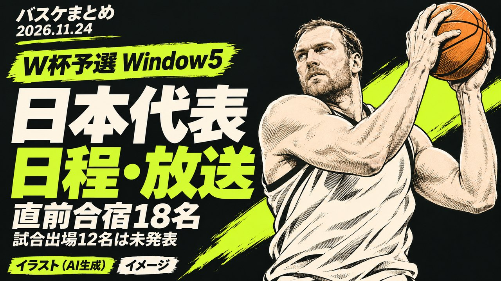

バスケ日本代表、W杯予選Window5のレバノン戦・カタール戦 日程と放送・合宿メンバー18名

バスケットボール男子日本代表は、FIBAワールドカップ2027アジア地区予選のWindow5でレバノン・カタールとアウェーで戦います。2試合の日程と放送、直前合宿の招集メンバー18名をまとめました。
8月のサウジアラビア戦のふり返りと、2連勝で本大会出場が決まる条件も紹介します。
Window5の日程と放送
第1戦のレバノン戦は、日本時間の11月27日(金)午前4:00に始まります。第2戦のカタール戦は、11月29日(日)の22:00開始です。
| 試合 | 開始（日本時間） | 会場 | テレビ | ライブ配信 |
|---|---|---|---|---|
| レバノン vs 日本 | 11月27日(金) 4:00 （26日 28:00） | Nouhad Nawfal Sports Complex（レバノン・ゾーク・ミカエル） | テレビ朝日系列 27日(金) 3:45〜 | ABEMA・DAZN・TVer |
| カタール vs 日本 | 11月29日(日) 22:00 | Al Janoub Stadium（カタール・ドーハ） | 日本テレビ系列 29日(日) 24:55〜 | DAZN・TVer |
2試合ともアウェーです。FIBAランキングは日本22位・レバノン33位・カタール74位（2026年9月1日現在）。
カタール戦の開始時間は、11月13日に25:00から22:00へ変わりました。
カタール戦のテレビは試合開始より後の時間帯です。試合を生で見るなら、DAZNかTVerのライブ配信になります。
放送予定をカレンダーに登録
ボタンを押すと、試合の日時と放送チャンネルがカレンダーに入ります。予定の30分前に通知が届きます。
2試合をまとめて登録するなら、カレンダーの購読が便利です。次の日本代表戦の放送予定も、ここに追加していきます。
2連勝でW杯本大会の出場が決まる
日本はここまで8試合を戦い、6勝2敗でグループFの首位に立っています。
JBAによると、Window5で2連勝すると本大会の出場権獲得が確定する予定です。自力で出場を決められる2試合になります。
| Window | 日付 | 相手 | スコア | 会場 |
|---|---|---|---|---|
| Window2 | 2026年2月26日 | 中国 | ●80-87 | 沖縄サントリーアリーナ（ホーム） |
| Window2 | 2026年3月1日 | 韓国 | ○78-72 | 沖縄サントリーアリーナ（ホーム） |
| Window3 | 2026年7月3日 | 中国 | ○92-73 | 中国（アウェー） |
| Window3 | 2026年7月6日 | 韓国 | ●79-81 | 韓国（アウェー） |
| Window4 | 2026年8月27日 | サウジアラビア | ○106-78 | ジェッダ（アウェー） |
| Window4 | 2026年8月31日 | カタール | ○123-70 | TOYOTA ARENA TOKYO（ホーム） |
2026年の6試合です。Window1（2025年11月〜12月）のチャイニーズ・タイペイ戦2試合を合わせて8試合になります。
本大会は2027年8月27日から9月12日まで、カタールで開かれる予定です。
2連勝できなかった場合も、2月26日のサウジアラビア戦と3月1日のレバノン戦がホームで残っています。
レバノン戦の12名
JBAは11月26日、レバノン戦に出る12名を発表しました。全員が直前合宿の18名から選ばれています。
アレックス・カーク・渡邊雄太・黒川虎徹の3人は、今回の12名に入りませんでした。
| 背番号 | 選手 | ポジション | 身長 | 所属 |
|---|---|---|---|---|
| 1 | 齋藤 拓実 | PG | 172cm | 名古屋ダイヤモンドドルフィンズ |
| 6 | 比江島 慎 | SG | 191cm | 宇都宮ブレックス |
| 9 | 小川 敦也 | PG | 190cm | 宇都宮ブレックス |
| 18 | 馬場 雄大 | SF | 196cm | 長崎ヴェルカ |
| 19 | 西田 優大 | SG | 190cm | シーホース三河 |
| 24 | ジョシュ・ホーキンソン | C/PF | 208cm | 東京サンロッカーズ |
| 30 | 富永 啓生 | SG | 188cm | レバンガ北海道 |
| 32 | シェーファー アヴィ 幸樹 | PF | 206cm | 仙台89ERS |
| 33 | 佐々木 隆成 | PG | 180cm | 三遠ネオフェニックス |
| 64 | 高島 紳司 | SG | 191cm | 宇都宮ブレックス |
| 91 | 吉井 裕鷹 | SF | 196cm | 茨城ロボッツ |
| 99 | 川真田 紘也 | C | 204cm | 琉球ゴールデンキングス |
カタール戦の12名は、まだ発表されていません。
直前合宿の招集メンバー18名
ヘッドコーチは桶谷大（川崎ブレイブサンダース）です。直前合宿は11月19日から、東京・北区の味の素ナショナルトレーニングセンターで行われています。
八村塁と河村勇輝は、今回のWindowに参加しません。
| 選手 | ポジション | 身長 | 所属 |
|---|---|---|---|
| 比江島 慎 | SG | 191cm | 宇都宮ブレックス |
| アレックス・カーク | C | 211cm | 川崎ブレイブサンダース |
| 渡邊 雄太 | SF | 206cm | 千葉ジェッツ |
| ジョシュ・ホーキンソン | C/PF | 208cm | 東京サンロッカーズ |
| 齋藤 拓実 | PG | 172cm | 名古屋ダイヤモンドドルフィンズ |
| 馬場 雄大 | SF | 196cm | 長崎ヴェルカ |
| 佐々木 隆成 | PG | 180cm | 三遠ネオフェニックス |
| シェーファー アヴィ 幸樹 | PF | 206cm | 仙台89ERS |
| 吉井 裕鷹 | SF | 196cm | 茨城ロボッツ |
| 川真田 紘也 | C | 204cm | 琉球ゴールデンキングス |
| 西田 優大 | SG | 190cm | シーホース三河 |
| 高島 紳司 | SG | 191cm | 宇都宮ブレックス |
| 富永 啓生 | SG | 188cm | レバンガ北海道 |
| 黒川 虎徹 | PG | 175cm | アルティーリ千葉 |
| 小川 敦也 | PG | 190cm | 宇都宮ブレックス |
| ◆新井 楽人 | SG | 190cm | 横浜ビー・コルセアーズ |
| ◆境 アリーム | C | 199cm | 白鷗大学 |
| ◆松本 秦 | SG | 191cm | 早稲田大学 |
◆は国内合宿のみ参加の予定。平均は193.6cm・27.8歳（11月9日現在）。レバノン戦の12名は上の表のとおりです。
注目選手
司令塔の候補は、齋藤拓実・佐々木隆成・黒川虎徹・小川敦也の4人でした。12名には黒川を除く3人が入っています。
小川は、愛知・名古屋のアジア競技大会で日本代表として活躍しました。
SGは比江島慎・富永啓生・西田優大・高島紳司らです。SFの渡邊雄太は12名から外れ、馬場雄大と吉井裕鷹が入りました。
ゴール下はホーキンソン・川真田紘也・シェーファーが担います。大学生の境アリームと松本秦も、国内合宿に呼ばれました。
桶谷HCは合宿で、八村と河村がいなくても「コンセプトは変わらない」と話しました。アウェーの2連戦へ「みんながファイターになって」戦いたいと意気込みを語っています。
8月のサウジアラビア戦のふり返り
日本は8月27日、敵地ジェッダでサウジアラビアに106-78で勝ちました。前半を56-40で折り返しています。
勝負を決めたのは第3クォーターです。この10分を34-12と大きく上回りました。
| 項目 | 数字 |
|---|---|
| 最終スコア | 日本 106-78 サウジアラビア |
| 前半 | 56-40 |
| 第3クォーター | 34-12 |
| 速攻の得点 | 29-2 |
| 八村塁 | 29得点（フィールドゴール14本中11本成功） |
八村塁が29得点を挙げ、走る展開で相手を引き離しました。12人中11人が得点し、8人がアシストを記録しています。
8月31日のカタール戦も、東京で123-70と大勝しました。ただ、2試合で中心だった八村と河村は今回いません。
レバノン戦・カタール戦で見たいところ
- 八村と河村がいない中で、誰が点を取るか。
- サウジアラビア戦のように、速攻で点を取れるか。
- カークがいない中で、ホーキンソンと川真田がゴール下を守れるか。
- ポイントガードの齋藤・佐々木・小川の3人が、どう時間を分け合うか。